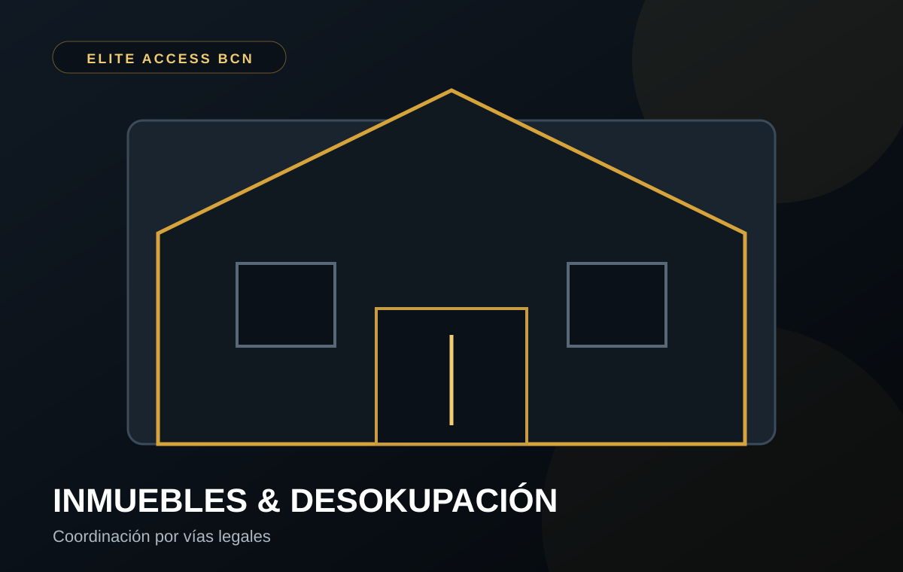

NUESTRO ENFOQUE
Primero analizamos. Después coordinamos.
Cuando un propietario se encuentra ante una ocupación, cada caso requiere estudiar la situación concreta y elegir la vía adecuada.
✓Recogida inicial de información y situación del inmueble.
✓Coordinación con profesionales jurídicos y mediadores cuando corresponda.
✓Apoyo en comunicación y organización de actuaciones permitidas.
✓Coordinación con autoridades competentes cuando proceda.
Lo que NO hacemos.
No realizamos desalojos por la fuerza, amenazas, coacciones, intimidación, cortes de suministros, cambio de cerraduras para forzar una salida ni entradas no autorizadas. La recuperación del inmueble se aborda por las vías legalmente disponibles.
¿Para quién?
- Propietarios particulares.
- Comunidades y administradores de fincas.
- Empresas con inmuebles ocupados.
- Inversores y gestores patrimoniales.
¿Quieres explicar tu caso?
Cuéntanos la situación básica del inmueble y te indicaremos cómo podemos ayudarte dentro de nuestro ámbito de actuación.
Explicar mi caso